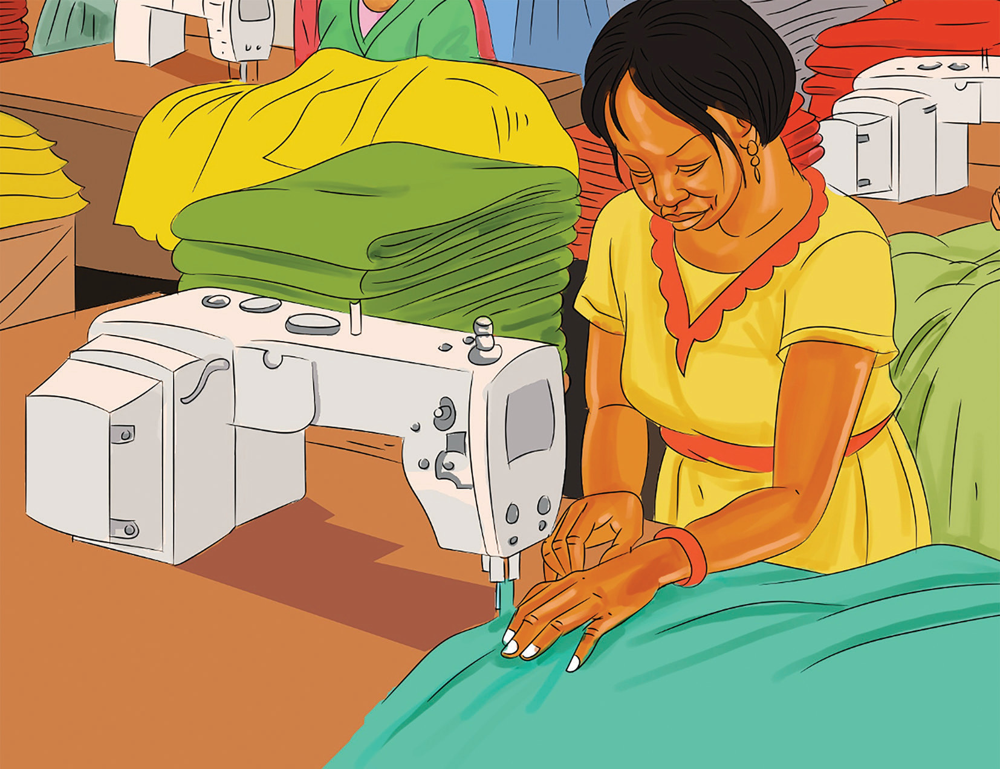

Juliana went through the necessary legal steps to register her tailoring business. She obtained the required permits and licence to operate business legally. Since Juliana interacts directly with her customers, she builds a strong relationship with them. With her friendly behaviour, she makes the customers feel valued. This promoted a positive word of mouth which leads to customer retention. As the only owner, Juliana enjoys the flexibility in meeting the needs of her customers by developing unique designs. She is now planning to expand the business and to offer jobs to people after generating reasonable profits.
The tailoring business established by Juliana in Activity 3.1 is an example of a business owned by a single person. This type of business is referred to as sole proprietorship whereby, the term ‘sole’ means single, ‘proprietorship’ means the state of owning